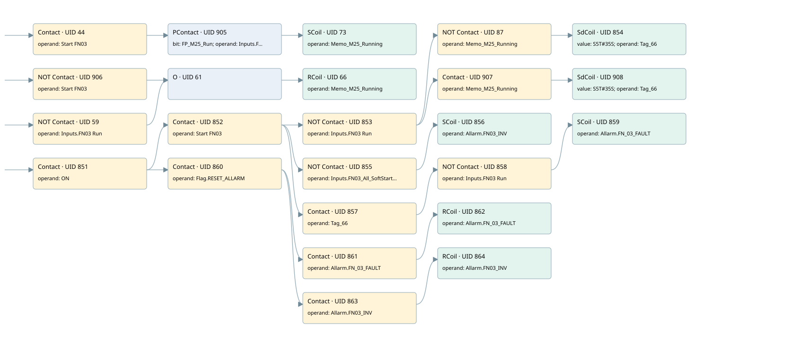

fn03
allarms 1 · 검색 색인 순서 21 · 원본 내부 NID 추정 23
백업 PLF 원본의 3051937 바이트 위치에서 복원한 XML. 검색 문서 1801의 객체 키 161022006762000000000000와 연결했다. 이름 해석 26/26개. 남은 RefId는 상수 또는 미해석 참조다.
연결 구조 다시 그리기
원본 Part/PCon/Wire를 이용한 연결도다. TIA 화면의 래더 배치 또는 실행 결과를 재현한 그림은 아니다. 핀 연결은 아래 표와 원본 XML을 기준으로 읽는다. 노드 위에 마우스를 두면 피연산자 이름을 볼 수 있다.

접점·코일·블록과 피연산자
| Part UID | Gate | Negated 핀 | 연결 피연산자 |
|---|---|---|---|
| 44 | Contact | operand = Start FN03 | |
| 905 | PContact | bit = FP_M25_Run; operand = Inputs.FN03 Run | |
| 73 | SCoil | operand = Memo_M25_Running | |
| 906 | Contact | operand | operand = Start FN03 |
| 59 | Contact | operand | operand = Inputs.FN03 Run |
| 61 | O | ||
| 66 | RCoil | operand = Memo_M25_Running | |
| 851 | Contact | operand = ON | |
| 852 | Contact | operand = Start FN03 | |
| 853 | Contact | operand | operand = Inputs.FN03 Run |
| 87 | Contact | operand | operand = Memo_M25_Running |
| 854 | SdCoil | value = S5T#35S; operand = Tag_66 | |
| 907 | Contact | operand = Memo_M25_Running | |
| 908 | SdCoil | value = S5T#35S; operand = Tag_66 | |
| 855 | Contact | operand | operand = Inputs.FN03_All_SoftStarter |
| 856 | SCoil | operand = Allarm.FN03_INV | |
| 857 | Contact | operand = Tag_66 | |
| 858 | Contact | operand | operand = Inputs.FN03 Run |
| 859 | SCoil | operand = Allarm.FN_03_FAULT | |
| 860 | Contact | operand = Flag.RESET_ALLARM | |
| 861 | Contact | operand = Allarm.FN_03_FAULT | |
| 862 | RCoil | operand = Allarm.FN_03_FAULT | |
| 863 | Contact | operand = Allarm.FN03_INV | |
| 864 | RCoil | operand = Allarm.FN03_INV |
접점 경로를 펼친 조건식
Contact·O/A·비교기의 원본 연결을 읽기 쉽게 펼친 보조 해석이다. POWER는 전원 레일 시작을 뜻한다. 호출 블록·에지·타이머의 내부 동작과 다중 쓰기 순서는 이 표로 실행 검증하지 않았다. 미해석 핀과 RefId는 원문 연결표에서 확인한다.
| UID | 동작 | 대상 | 원본 접점 경로 | 내용 |
|---|---|---|---|---|
| 73 | SCoil | Memo_M25_Running | PContact UID 905.out (블록 동작 확인) | 조건 성립 시 Set |
| 66 | RCoil | Memo_M25_Running | (NOT [Start FN03] OR NOT [Inputs.FN03 Run]) | 조건 성립 시 Reset |
| 854 | SdCoil | Tag_66 | (((ON AND Start FN03) AND NOT [Inputs.FN03 Run]) AND NOT [Memo_M25_Running]) | 시간 동작 SdCoil; 타이머 의미 추가 확인 / 시간 인자 S5T#35S |
| 908 | SdCoil | Tag_66 | (((ON AND Start FN03) AND NOT [Inputs.FN03 Run]) AND Memo_M25_Running) | 시간 동작 SdCoil; 타이머 의미 추가 확인 / 시간 인자 S5T#35S |
| 856 | SCoil | Allarm.FN03_INV | ((ON AND Start FN03) AND NOT [Inputs.FN03_All_SoftStarter]) | 조건 성립 시 Set |
| 859 | SCoil | Allarm.FN_03_FAULT | (((ON AND Start FN03) AND Tag_66) AND NOT [Inputs.FN03 Run]) | 조건 성립 시 Set |
| 862 | RCoil | Allarm.FN_03_FAULT | ((ON AND Flag.RESET_ALLARM) AND Allarm.FN_03_FAULT) | 조건 성립 시 Reset |
| 864 | RCoil | Allarm.FN03_INV | ((ON AND Flag.RESET_ALLARM) AND Allarm.FN03_INV) | 조건 성립 시 Reset |
원본 배선 연결
| Wire UID | 동일 Wire 연결 끝점 |
|---|---|
| 831 | Powerrail {} ↔ Part 44.in ↔ Part 906.in ↔ Part 59.in ↔ Part 851.in |
| 43 | ORef 45 (Start FN03) ↔ Part 44.operand |
| 51 | Part 44.out ↔ Part 905.pre |
| 52 | ORef 54 (FP_M25_Run) ↔ Part 905.bit |
| 53 | ORef 55 (Inputs.FN03 Run) ↔ Part 905.operand |
| 78 | Part 905.out ↔ Part 73.in |
| 79 | ORef 80 (Memo_M25_Running) ↔ Part 73.operand |
| 56 | ORef 57 (Start FN03) ↔ Part 906.operand |
| 62 | Part 906.out ↔ Part 61.in1 |
| 58 | ORef 60 (Inputs.FN03 Run) ↔ Part 59.operand |
| 63 | Part 59.out ↔ Part 61.in2 |
| 68 | Part 61.out ↔ Part 66.in |
| 69 | ORef 70 (Memo_M25_Running) ↔ Part 66.operand |
| 881 | ORef 865 (ON) ↔ Part 851.operand |
| 882 | Part 851.out ↔ Part 852.in ↔ Part 860.in |
| 883 | ORef 866 (Start FN03) ↔ Part 852.operand |
| 884 | Part 852.out ↔ Part 853.in ↔ Part 855.in ↔ Part 857.in |
| 885 | ORef 867 (Inputs.FN03 Run) ↔ Part 853.operand |
| 90 | Part 853.out ↔ Part 87.in ↔ Part 907.in |
| 92 | ORef 93 (Memo_M25_Running) ↔ Part 87.operand |
| 91 | Part 87.out ↔ Part 854.in |
| 887 | ORef 869 (S5T#35S) ↔ Part 854.value |
| 888 | ORef 868 (Tag_66) ↔ Part 854.operand |
| 95 | ORef 96 (Memo_M25_Running) ↔ Part 907.operand |
| 94 | Part 907.out ↔ Part 908.in |
| 915 | ORef 911 (S5T#35S) ↔ Part 908.value |
| 916 | ORef 910 (Tag_66) ↔ Part 908.operand |
| 889 | ORef 870 (Inputs.FN03_All_SoftStarter) ↔ Part 855.operand |
| 890 | Part 855.out ↔ Part 856.in |
| 891 | ORef 871 (Allarm.FN03_INV) ↔ Part 856.operand |
| 892 | ORef 872 (Tag_66) ↔ Part 857.operand |
| 893 | Part 857.out ↔ Part 858.in |
| 894 | ORef 873 (Inputs.FN03 Run) ↔ Part 858.operand |
| 895 | Part 858.out ↔ Part 859.in |
| 896 | ORef 874 (Allarm.FN_03_FAULT) ↔ Part 859.operand |
| 897 | ORef 875 (Flag.RESET_ALLARM) ↔ Part 860.operand |
| 898 | Part 860.out ↔ Part 861.in ↔ Part 863.in |
| 899 | ORef 876 (Allarm.FN_03_FAULT) ↔ Part 861.operand |
| 900 | Part 861.out ↔ Part 862.in |
| 901 | ORef 877 (Allarm.FN_03_FAULT) ↔ Part 862.operand |
| 902 | ORef 878 (Allarm.FN03_INV) ↔ Part 863.operand |
| 903 | Part 863.out ↔ Part 864.in |
| 904 | ORef 879 (Allarm.FN03_INV) ↔ Part 864.operand |
식별자 해석 근거 26개
| ORef UID | RefId | 이름 | IdentXmlPart 파일 | 해석 방법 |
|---|---|---|---|---|
| 45 | 93 | Start FN03 | 0658-IdentXmlPart.xml | UID/RID + search-text + NID agreement |
| 55 | 289 | Inputs.FN03 Run | 0657-IdentXmlPart.xml | UID/RID + search-text + NID agreement |
| 54 | 327 | FP_M25_Run | 0658-IdentXmlPart.xml | UID/RID + search-text + NID agreement |
| 80 | 326 | Memo_M25_Running | 0658-IdentXmlPart.xml | UID/RID + search-text + NID agreement |
| 57 | 93 | Start FN03 | 0658-IdentXmlPart.xml | UID/RID + search-text + NID agreement |
| 60 | 289 | Inputs.FN03 Run | 0657-IdentXmlPart.xml | UID/RID + search-text + NID agreement |
| 70 | 326 | Memo_M25_Running | 0658-IdentXmlPart.xml | UID/RID + search-text + NID agreement |
| 865 | 1 | ON | 0658-IdentXmlPart.xml | UID/RID + search-text + NID agreement |
| 866 | 93 | Start FN03 | 0658-IdentXmlPart.xml | UID/RID + search-text + NID agreement |
| 867 | 289 | Inputs.FN03 Run | 0657-IdentXmlPart.xml | UID/RID + search-text + NID agreement |
| 93 | 326 | Memo_M25_Running | 0658-IdentXmlPart.xml | UID/RID + search-text + NID agreement |
| 868 | 95 | Tag_66 | 0658-IdentXmlPart.xml | UID/RID + search-text + NID agreement |
| 869 | 325 | S5T#35S | 0656-IdentXmlPart.xml | literal candidate: UID/RID/NID + nearby named declarations + search-text agreement |
| 96 | 326 | Memo_M25_Running | 0658-IdentXmlPart.xml | UID/RID + search-text + NID agreement |
| 910 | 95 | Tag_66 | 0658-IdentXmlPart.xml | UID/RID + search-text + NID agreement |
| 911 | 325 | S5T#35S | 0656-IdentXmlPart.xml | literal candidate: UID/RID/NID + nearby named declarations + search-text agreement |
| 870 | 290 | Inputs.FN03_All_SoftStarter | 0657-IdentXmlPart.xml | UID/RID + search-text + NID agreement |
| 871 | 227 | Allarm.FN03_INV | 0657-IdentXmlPart.xml | UID/RID + search-text + NID agreement |
| 872 | 95 | Tag_66 | 0658-IdentXmlPart.xml | UID/RID + search-text + NID agreement |
| 873 | 289 | Inputs.FN03 Run | 0657-IdentXmlPart.xml | UID/RID + search-text + NID agreement |
| 874 | 97 | Allarm.FN_03_FAULT | 0657-IdentXmlPart.xml | UID/RID + search-text + NID agreement |
| 875 | 13 | Flag.RESET_ALLARM | 0657-IdentXmlPart.xml | UID/RID + search-text + NID agreement |
| 876 | 97 | Allarm.FN_03_FAULT | 0657-IdentXmlPart.xml | UID/RID + search-text + NID agreement |
| 877 | 97 | Allarm.FN_03_FAULT | 0657-IdentXmlPart.xml | UID/RID + search-text + NID agreement |
| 878 | 227 | Allarm.FN03_INV | 0657-IdentXmlPart.xml | UID/RID + search-text + NID agreement |
| 879 | 227 | Allarm.FN03_INV | 0657-IdentXmlPart.xml | UID/RID + search-text + NID agreement |
검색 코드 보조 자료
참조 명칭을 찾기 위한 자료이며 실행 순서나 AND/OR 관계는 위 연결표로 확인한다.
"start fn03" "inputs"."fn03 run" "fp_m25_run" "memo_m25_running" "start fn03" "memo_m25_running" "inputs"."fn03 run" "on" "start fn03" "inputs"."fn03 run" "memo_m25_running" "tag_66" s5t#35s "flag".reset_allarm "allarm".fn_03_fault "allarm".fn_03_fault "allarm".fn03_inv "allarm".fn03_inv "inputs".fn03_all_softstarter "allarm".fn03_inv "tag_66" "inputs"."fn03 run" "allarm".fn_03_fault "memo_m25_running" "tag_66" s5t#35s